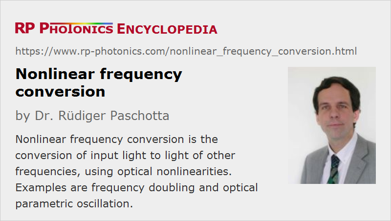

Nonlinear Frequency Conversion
Definition: the conversion of input light to light of other frequencies, using optical nonlinearities
More general term: nonlinear effects
More specific terms: frequency doubling, frequency tripling, frequency quadrupling, sum and difference frequency generation, optical rectification, supercontinuum generation, optical parametric oscillation and generation, stimulated Raman scattering, high harmonic generation
German: nichtlineare Frequenzkonversion
How to cite the article; suggest additional literature
Author: Dr. Rüdiger Paschotta
Not all wavelength regions of interest are directly accessible with lasers. Therefore, it is common e.g. to generate visible light by nonlinear conversion of infrared light from one or several lasers.
Examples of nonlinear conversion processes are:
- frequency doubling and sum and difference frequency generation in crystals with a χ(2) nonlinearity
- parametric oscillation and amplification (also in nonlinear crystal materials)
- optical rectification for generating terahertz pulses from optical picosecond or femtosecond pulses
- Raman conversion in bulk crystals or in optical fibers, exploiting a χ(3) nonlinearity (→ Raman lasers, Raman amplifiers)
- supercontinuum generation, e.g. in photonic crystal fibers, where a range of different optical nonlinearities simultaneously contributes to the generation of new frequency components
- high harmonic generation in gases, occurring at extremely high optical intensities of the order of 1014 W/cm2 or higher
Many but not all of these processes can be efficient only with phase matching and with polarized light. Laser radiation is usually polarized, but some devices (e.g. some high-power fiber lasers and amplifiers) do not emit with a stable linear polarization state and are therefore not very suitable for nonlinear frequency conversion.
Efficient Conversion at High Optical Intensities
As nonlinear frequency conversion can be efficient only at sufficiently high optical intensities, the intensities often have to be increased with one or several of the following methods:
- A pulsed (e.g. mode-locked or Q-switched) laser can have a peak power which is much higher than the average power.
- For single-frequency lasers and for mode-locked lasers, a resonant enhancement cavity can be used (→ resonant frequency doubling).
- Nonlinear conversion can also be done inside a laser resonator (→ intracavity frequency doubling).
- Another possibility is to increase the interaction length by using a waveguide (e.g. made of LiNbO3) or a fiber (the latter usually for χ(3) processes only). Particularly waveguides with small effective mode area can lead to high conversion efficiencies even with low optical powers.
Applicable intensities are often limited by the damage threshold of the materials. There are situations where this limitation does not allow one to achieve highly efficient frequency conversion. An example is frequency doubling of ultrashort pulses into the ultraviolet spectral region, where the large group velocity mismatch limits the interaction length while the damage threshold is relatively low.
Design Issues
The design of nonlinear frequency conversion devices can involve subtle issues. For devices based on parametric nonlinearities, there can be beam quality effects due to spatial walk-off, gain guiding, pump depletion and backconversion. Such effects can be investigated with numerical computer models, which can simulate the evolution of the spatial (and possibly temporal) profiles of the interacting beams. Particularly for the conversion of ultrashort pulses, there is a wide range of phenomena which should be properly understood in order to avoid a range of problems.
The complexity of the nonlinear interactions, together with limitations of the available know-how in the photonics industry, is probably preventing many useful applications. For example, more dye lasers could be replaced with optical parametric oscillators.
Suppliers
The RP Photonics Buyer's Guide contains 30 suppliers for nonlinear frequency conversion equipment. Among them:
Questions and Comments from Users
Here you can submit questions and comments. As far as they get accepted by the author, they will appear above this paragraph together with the author’s answer. The author will decide on acceptance based on certain criteria. Essentially, the issue must be of sufficiently broad interest.
Please do not enter personal data here; we would otherwise delete it soon. (See also our privacy declaration.) If you wish to receive personal feedback or consultancy from the author, please contact him e.g. via e-mail.
By submitting the information, you give your consent to the potential publication of your inputs on our website according to our rules. (If you later retract your consent, we will delete those inputs.) As your inputs are first reviewed by the author, they may be published with some delay.
Bibliography
| [1] | G. D. Boyd and D. A. Kleinman, “Parametric interaction of focused Gaussian light beams”, J. Appl. Phys. 39 (8), 3597 (1968), doi:10.1063/1.1656831 (a seminal work with a comprehensive quantitative discussion) |
| [2] | R. L. Sutherland, Handbook of Nonlinear Optics, 2nd edn., Marcel Dekker, New York (2003) |
| [3] | A. V. Smith, SNLO software for simulating nonlinear frequency conversion in crystals, free download, http://www.as-photonics.com/snlo, from AS-Photonics |
| [4] | A. V. Smith, Crystal nonlinear optics with SNLO examples, ISBN 978-0-692-40044-9, http://www.as-photonics.com/products/crystal-nonlinear-optics-book |
See also: frequency doubling, frequency tripling, frequency quadrupling, sum and difference frequency generation, optical rectification, optical parametric oscillators, optical parametric amplifiers, optical parametric generators, supercontinuum generation, high harmonic generation, RGB sources, Raman lasers, nonlinear crystal materials, nonlinear optics, nonlinear polarization, ultraviolet light, terahertz radiation, The Photonics Spotlight 2007-03-05, The Photonics Spotlight 2007-09-21
and other articles in the category nonlinear optics

This encyclopedia is authored by Dr. Rüdiger Paschotta, the founder and executive of RP Photonics Consulting GmbH. How about a tailored training course from this distinguished expert at your location? Contact RP Photonics to find out how his technical consulting services (e.g. product designs, problem solving, independent evaluations, training) and software could become very valuable for your business!
|  |
If you like this page, please share the link with your friends and colleagues, e.g. via social media:
These sharing buttons are implemented in a privacy-friendly way!